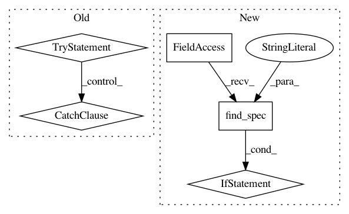

bcb3b5c5cdd2db508dec52f29c3fa053deea1564,tmtoolkit/topicmod/tm_lda.py,,,#,18
Before Change
metrics_using_gmpy2 = ()
default_metrics_using_gmpy2 = ()
try:
import gensim
metrics_using_gensim = (
"coherence_gensim_u_mass", // same as coherence_mimno_2011
"coherence_gensim_c_v",
"coherence_gensim_c_uci",
"coherence_gensim_c_npmi"
)
except ImportError:
metrics_using_gensim = ()
AVAILABLE_METRICS = (
"loglikelihood", // simply uses the last reported log likelihood as fallback
"cao_juan_2009",
"arun_2010",
After Change
metrics_using_gmpy2 = ()
default_metrics_using_gmpy2 = ()
if importlib.util.find_spec("gensim"):
metrics_using_gensim = (
"coherence_gensim_u_mass", // same as coherence_mimno_2011
"coherence_gensim_c_v",
"coherence_gensim_c_uci",
"coherence_gensim_c_npmi"
)
else:
metrics_using_gensim = ()
AVAILABLE_METRICS = (
"loglikelihood", // simply uses the last reported log likelihood as fallback
"cao_juan_2009",
"arun_2010",
In pattern: SUPERPATTERN
Frequency: 3
Non-data size: 5
Instances
Project Name: WZBSocialScienceCenter/tmtoolkit
Commit Name: bcb3b5c5cdd2db508dec52f29c3fa053deea1564
Time: 2019-02-05
Author: markus.konrad@wzb.eu
File Name: tmtoolkit/topicmod/tm_lda.py
Class Name:
Method Name:
Project Name: WZBSocialScienceCenter/tmtoolkit
Commit Name: ec581356b39bb6312a6f58dfca74c2e366396001
Time: 2019-02-05
Author: markus.konrad@wzb.eu
File Name: tmtoolkit/topicmod/__init__.py
Class Name:
Method Name:
Project Name: WZBSocialScienceCenter/tmtoolkit
Commit Name: bcb3b5c5cdd2db508dec52f29c3fa053deea1564
Time: 2019-02-05
Author: markus.konrad@wzb.eu
File Name: tmtoolkit/topicmod/tm_sklearn.py
Class Name:
Method Name: